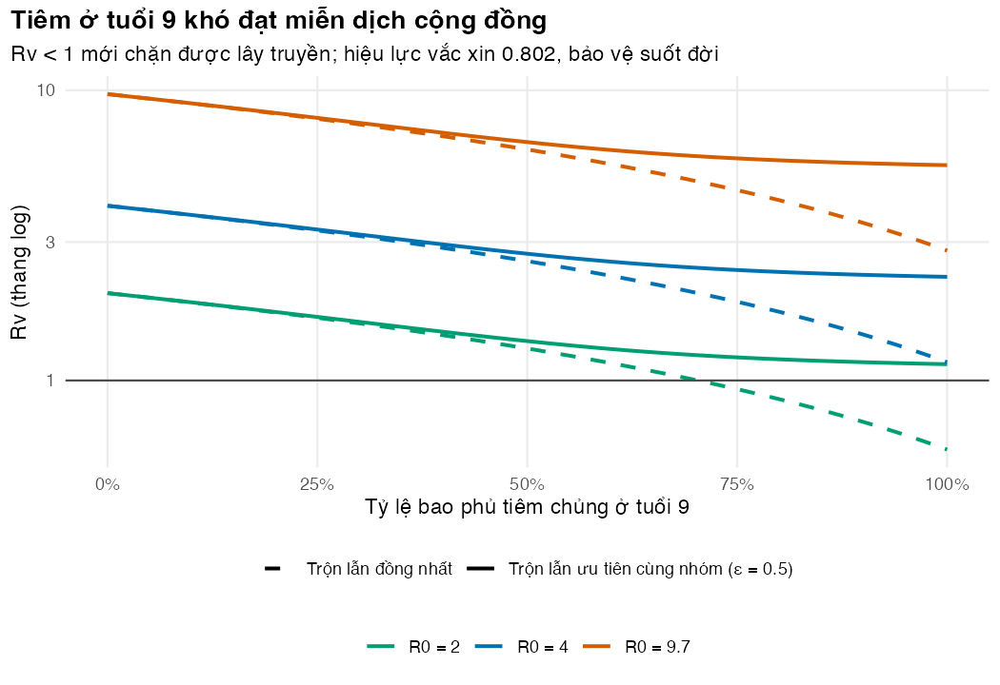
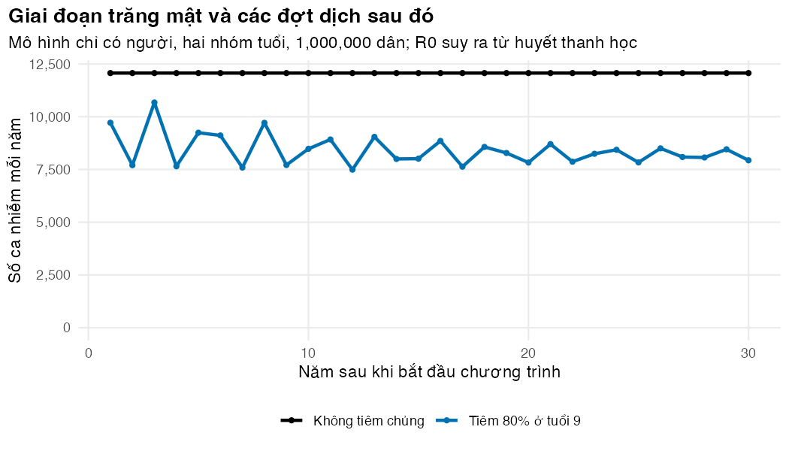

Bài 3: Tiêm chủng, hiệu quả trực tiếp và gián tiếp
Xây mô hình hai nhóm tuổi, tính tỷ lệ bao phủ tới hạn bằng ma trận thế hệ kế tiếp và đo bốn loại hiệu quả của chương trình
Vì sao bạn nên quan tâm?
Giả sử Sở Y tế một tỉnh phía Nam muốn tiêm Qdenga cho học sinh 9 tuổi ngay tại trường. Mỗi em cần hai liều, riêng tiền vắc xin theo giá VNVC đã là 2,580,000 VNĐ, bằng 11 ngày lương tối thiểu vùng I (Hệ thống tiêm chủng VNVC 2026; Chính phủ 2025). Ở TP.HCM năm 2022, khoảng 75% ca tử vong do sốt xuất huyết là người lớn (Báo Sài Gòn Giải Phóng 2022); cùng năm, Cục Quản lý Khám, chữa bệnh lại nói đa số ca tử vong là trẻ từ 15 tuổi trở xuống (VietTimes 2022), một mâu thuẫn mà Bài 5 quay lại. Vậy khi 80% học sinh được tiêm, ông bà, cha mẹ và các em nhỏ chưa tiêm được lợi bao nhiêu, và người lớn chưa tiêm có bị nhiễm muộn hơn không? Bài này cho bạn đo hiệu quả trực tiếp, gián tiếp và nhận ra dịch chuyển tuổi mắc trước khi đề xuất độ tuổi và tỷ lệ bao phủ.
Mục tiêu học tập
Sau bài này, bạn có thể:
Phân biệt bốn loại hiệu quả của một chương trình tiêm chủng: trực tiếp (direct), gián tiếp (indirect), toàn phần (total) và chung (overall).
Xây mô hình chỉ có người (host-only) với hai nhóm tuổi, ma trận trộn lẫn (mixing matrix) và tiêm chủng khi trẻ chuyển nhóm tuổi.
Tính R0 và hệ số lây nhiễm khi có tiêm chủng (\(R_v\)) bằng ma trận thế hệ kế tiếp (next-generation matrix, NGM).
Nhận diện giai đoạn trăng mật (honeymoon period) và hiện tượng dịch chuyển tuổi mắc (age shift) sau khi tiêm chủng.
Ý chính
Hiệu quả trực tiếp so người tiêm với người không tiêm cùng tuổi, trong cùng quần thể. Hiệu quả gián tiếp so người không tiêm khi có và khi không có chương trình. Mọi phép so sánh phải trong cùng nhóm tuổi.
Ma trận trộn lẫn \(M_{ij}\) cho biết nhóm \(i\) tiếp xúc với nhóm \(j\) bao nhiêu. Tiếp xúc phải có qua có lại: \(N_i M_{ij} = N_j M_{ji}\).
R0 của mô hình nhiều nhóm là giá trị riêng lớn nhất của NGM \(K = FV^{-1}\).
Tiêm ở tuổi \(A\) thay vì lúc sinh để lại một nhóm trẻ không được bảo vệ, nên tỷ lệ bao phủ tới hạn tăng thành \((1 - 1/R_0)/(E \cdot N_2/N)\) khi trộn lẫn đồng nhất (homogeneous mixing).
Khi nhóm được tiêm không phải nhóm lây truyền chính, trộn lẫn ưu tiên cùng nhóm (assortative mixing) làm việc chặn lây truyền khó hơn dù R0 không đổi; nếu đó là nhóm lõi, kết luận có thể đảo ngược.
Một ngăn tuổi duy nhất cho nhóm 0 đến \(A\) tuổi làm tuổi tiêm trải rất rộng; chia thành \(k\) ngăn nối tiếp để tuổi tiêm tập trung quanh \(A\).
Sau khi bắt đầu tiêm, số ca giảm mạnh vài năm (trăng mật), rồi dao động trở lại khi người cảm nhiễm tích lũy.
Lực lây nhiễm (force of infection) giảm làm người chưa tiêm bị nhiễm muộn hơn; ở nhóm lớn tuổi chưa tiêm, nguy cơ có thể tăng, và hiệu quả toàn phần có thể nhỏ hơn hiệu quả trực tiếp.
Nội dung
Bốn loại hiệu quả của chương trình tiêm chủng
Một thử nghiệm lâm sàng ngẫu nhiên theo cá nhân chỉ đo được hiệu lực (efficacy) trực tiếp. Chương trình tiêm chủng còn tác động lên người không tiêm. Halloran và cộng sự phân biệt các loại hiệu quả theo nhóm so sánh (Halloran, Struchiner, và Longini 1997):
Hiệu quả
So sánh tỷ suất mới mắc của
với
Trực tiếp (direct)
người đã tiêm
người chưa tiêm cùng tuổi, trong quần thể có chương trình
Gián tiếp (indirect)
người chưa tiêm, quần thể có chương trình
người cùng tuổi, quần thể không có chương trình
Toàn phần (total)
người đã tiêm, quần thể có chương trình
người cùng tuổi, quần thể không có chương trình
Chung (overall)
cả quần thể có chương trình
cả quần thể không có chương trình
Mỗi hiệu quả bằng \(1 - \text{(tỷ số tỷ suất mới mắc)}\). Hiệu quả chung là con số mà nhà hoạch định chính sách cần; nó chỉ tính được bằng mô hình động hoặc thử nghiệm ngẫu nhiên theo cụm.
Hai nhóm tuổi và tiêm chủng ở tuổi A
Ta dùng một mô hình SIR chỉ có người cho một bệnh giống SXHD: muỗi chưa được mô hình hóa riêng mà gộp vào hệ số lây truyền \(\beta\) (Bài 4 thêm muỗi vào). Dân số chia hai nhóm: trẻ từ 0 đến 9 tuổi (nhóm 1) và từ 9 tuổi trở lên (nhóm 2). Lúc chuyển nhóm, tỷ lệ \(c\) trẻ được tiêm. Vắc xin kiểu tất cả hoặc không (all-or-nothing): người cảm nhiễm được tiêm chuyển sang ngăn V (được bảo vệ) với xác suất \(E\), còn lại vào ngăn S2v (tiêm nhưng không được bảo vệ). Trẻ đã nhiễm hoặc đã có miễn dịch cũng được tiêm nhưng không đổi trạng thái. Trong bài này, bảo vệ kéo dài suốt đời; Bài 4 thêm suy giảm bảo vệ.
Còn một chi tiết quyết định ý nghĩa của “tiêm ở tuổi \(A\)”: trẻ rời nhóm 1 lúc nào? Nếu nhóm 1 chỉ có một ngăn với tỷ suất rời \(1/A\), thời điểm rời là ngẫu nhiên theo phân phối mũ: nhiều trẻ chuyển nhóm (và được tiêm) rất sớm, nhiều trẻ rất muộn. Cách sửa là chia nhóm 1 thành \(k\) ngăn tuổi nối tiếp, mỗi ngăn có tỷ suất rời \(\kappa = k/A\). Tuổi lúc chuyển nhóm khi đó theo phân phối Erlang với trung bình \(A\) và độ lệch chuẩn \(A/\sqrt{k}\).
flowchart LR B(("Sinh")) --> S1["S1: k ngăn tuổi"] subgraph G1["Nhóm 1: 0 đến A tuổi (mỗi biến có k ngăn nối tiếp)"] S1 -->|"nhiễm"| I1["I1: k ngăn"] -->|"hồi phục"| R1["R1: k ngăn"] end S1 -->|"ngăn cuối: κ(1−c)"| S2["S2 chưa tiêm"] S1 -->|"κ·c·E"| V["V2 được bảo vệ"] S1 -->|"κ·c·(1−E)"| F["S2v tiêm, không bảo vệ"] I1 -.->|"κ(1−c)"| I2 I1 -.->|"κ·c"| I2v["I2v"] R1 -.->|"κ(1−c)"| R2 R1 -.->|"κ·c"| R2v["R2v"] S2 --> I2["I2"] --> R2["R2"] F --> I2v --> R2v
flowchart LR
B(("Sinh")) --> S1["S1: k ngăn tuổi"]
subgraph G1["Nhóm 1: 0 đến A tuổi (mỗi biến có k ngăn nối tiếp)"]
S1 -->|"nhiễm"| I1["I1: k ngăn"] -->|"hồi phục"| R1["R1: k ngăn"]
end
S1 -->|"ngăn cuối: κ(1−c)"| S2["S2 chưa tiêm"]
S1 -->|"κ·c·E"| V["V2 được bảo vệ"]
S1 -->|"κ·c·(1−E)"| F["S2v tiêm, không bảo vệ"]
I1 -.->|"κ(1−c)"| I2
I1 -.->|"κ·c"| I2v["I2v"]
R1 -.->|"κ(1−c)"| R2
R1 -.->|"κ·c"| R2v["R2v"]
S2 --> I2["I2"] --> R2["R2"]
F --> I2v --> R2v
Lực lây nhiễm lên nhóm \(i\) là \(\lambda_i = \beta \sum_j M_{ij} I_j / N_j\), với \(I_1\) là tổng người nhiễm ở mọi ngăn tuổi của nhóm 1. Ma trận trộn lẫn dùng dạng “ưu tiên cùng nhóm”: tỷ lệ \(\varepsilon\) tiếp xúc dành cho nhóm mình, phần còn lại chia theo quy mô các nhóm. \(\varepsilon = 0\) là trộn lẫn đồng nhất. Với dữ liệu thật, cần ma trận tiếp xúc đo ở địa phương. Một khảo sát nhật ký tiếp xúc ở nông thôn miền Bắc Việt Nam cho thấy trộn lẫn ưu tiên cùng nhóm tuổi nhưng đồng nhất hơn ở châu Âu (Horby và c.s. 2011); khi chưa có khảo sát, có thể dùng ma trận ước tính cho 152 nước (Prem, Cook, và Jit 2017). Ở đây \(\varepsilon\) là giá trị minh họa, vì chưa có ước tính công khai cho Việt Nam theo đúng dạng ma trận này.
Ma trận thế hệ kế tiếp
Khi có nhiều nhóm, “mỗi ca gây bao nhiêu ca” phụ thuộc ca đó thuộc nhóm nào. Ma trận thế hệ kế tiếp \(K = FV^{-1}\) gom điều này lại: \(F\) chứa tốc độ sinh ca nhiễm mới, \(V\) chứa tốc độ rời khỏi (và chuyển giữa) các ngăn nhiễm. Ở đây các ngăn nhiễm là \(I_1\) ở \(k\) ngăn tuổi và \(I_2\), nên \(K\) có \(k + 1\) hàng. R0 là giá trị riêng lớn nhất của \(K\)(Diekmann, Heesterbeek, và Metz 1990; Driessche và Watmough 2002). Tiêm chủng làm giảm tỷ lệ cảm nhiễm của nhóm 2 xuống \(1 - cE\); giá trị riêng lớn nhất của \(K\) mới là \(R_v\). Với trộn lẫn đồng nhất, có công thức gọn:
Phần này chạy code/l03-vaccination-herd.R. Đoạn đầu dựng quy mô hai nhóm từ tuổi thọ Việt Nam, tuổi tiêm và số ngăn tuổi. Kiểm tra: tổng hai nhóm bằng 1,000,000 người.
Nhóm 1 có 9 ngăn tuổi, mỗi ngăn khoảng một năm. Nhóm từ 9 tuổi trở lên chiếm 88.7% dân số. Đoạn sau so tuổi lúc chuyển nhóm khi nhóm 1 có một ngăn và khi có 9 ngăn. Kiểm tra: mẫu rút từ phân phối Erlang có cùng trung bình và độ lệch chuẩn với công thức.
# At what age does a child enter group 2 (and get vaccinated)? With k stages the age at# leaving is Erlang(k): mean A, SD A / sqrt(k). With ONE stage it is exponential: very spread out.A <- p$age_vacck_vec <-c(1, inp$k)exit_tab <-data.frame(stages = k_vec, mean_age = A, sd_age = A /sqrt(k_vec),share_before_A_over_3 =pgamma(A /3, shape = k_vec, rate = k_vec / A),share_after_2A =1-pgamma(2* A, shape = k_vec, rate = k_vec / A))round(exit_tab, 3)
# Check: the sample of ages from the same distribution has the same mean and SDset.seed(2025)draw <-rgamma(1e5, shape = inp$k, rate = inp$k / A)stopifnot(abs(mean(draw) - A) <0.05, abs(sd(draw) - A /sqrt(inp$k)) <0.05)
Với một ngăn, 28% trẻ chuyển nhóm trước 3 tuổi và 14% sau 18 tuổi: “tiêm ở tuổi 9” thực chất là tiêm ở mọi lứa tuổi. Với 9 ngăn, độ lệch chuẩn chỉ còn 3.0 năm và hai tỷ lệ trên gần bằng 0. Đó là lý do mô hình dùng nhiều ngăn tuổi.
Đoạn tiếp theo in ma trận trộn lẫn và NGM, rồi kiểm tra: tổng mỗi hàng của \(M\) bằng 1, tiếp xúc có qua có lại, giá trị riêng lớn nhất bằng R0 = 9.7 (suy ra từ lực lây nhiễm đo bằng huyết thanh học, xem Bài 4). Với trộn lẫn đồng nhất, R0 cũng bằng \(\beta/(\gamma+\mu)\) bất kể số ngăn tuổi; đây là phép kiểm tra thật cho cách dựng NGM.
# Mixing matrix (rows sum to 1, contacts reciprocal) and the next-generation matrix.# beta was scaled in host2_inputs() so that the dominant eigenvalue equals R0.inp$M
stopifnot(all(abs(rowSums(inp$M) -1) <1e-12),abs(inp$n_groups[1] * inp$M[1, 2] - inp$n_groups[2] * inp$M[2, 1]) <1e-6)K <-ngm_two_group(inp$beta, inp$gamma, inp$mu, inp$kappa, inp$k, inp$M, inp$n_groups, c(1, 1))dim(K) # one row per infected compartment: k stages + group 2
[1] 10 10
r0_ngm <-spectral_radius(K)# With homogeneous mixing, R0 is simply beta / (gamma + mu), whatever the number of stagesstopifnot(abs(r0_ngm - p$r0) <1e-8, abs(inp$beta / (inp$gamma + inp$mu) - p$r0) <1e-8)r0_ngm
[1] 9.7
Đoạn sau tính \(R_v\) trên một lưới tỷ lệ bao phủ bằng hai cách, NGM và công thức, rồi kiểm tra hai cách cho cùng kết quả. Bảng cuối so sánh tỷ lệ bao phủ tới hạn khi tiêm lúc sinh và khi tiêm ở tuổi 9, với hiệu lực 0.802 (Biswal và c.s. 2020).
# Reproduction number with routine vaccination at age A (disease-free state):# group 2 susceptible share = 1 - coverage * efficacy. Compare the NGM with the formula# Rv = R0 * (1 - c * e * n2/N), valid for homogeneous mixing.rv_ngm <-function(cv, r0, eps) { pp <- p; pp$r0 <- r0 ii <-host2_inputs(pp, eps = eps)spectral_radius(ngm_two_group(ii$beta, ii$gamma, ii$mu, ii$kappa, ii$k, ii$M, ii$n_groups,c(1, 1- cv * ii$eff)))}cov_grid <-seq(0, 1, by =0.02)rv_formula <- p$r0 * (1- cov_grid * p$ve_initial * share_n2)rv_numeric <-sapply(cov_grid, rv_ngm, r0 = p$r0, eps =0)stopifnot(max(abs(rv_formula - rv_numeric)) <1e-8)# Critical coverage: vaccinating at birth vs at age A (homogeneous mixing, efficacy e)r0_values <-c(p$r0_alt_low, p$r0_alt_high, p$r0)crit_tab <-data.frame(R0 = r0_values,at_birth = (1-1/ r0_values) / p$ve_initial,at_age_A = (1-1/ r0_values) / (p$ve_initial * share_n2))round(crit_tab, 3)
Với R0 = 2, tiêm lúc sinh cần 62.3% bao phủ, tiêm ở tuổi 9 cần 70.3%. Với R0 = 9.7 (suy ra từ huyết thanh học ở Bình Thuận, xem Bài 4), cả hai con số đều vượt 100%.
Đoạn sau vẽ \(R_v\) theo tỷ lệ bao phủ cho ba giá trị R0 và hai kiểu trộn lẫn. Kiểm tra: đường cắt \(R_v = 1\) (đường ngang) ở tỷ lệ bao phủ tới hạn trong bảng trên, và chỉ R0 thấp mới cắt được trong khoảng 0–100%.
rv_df <-NULLfor (r0 in r0_values) for (eps inc(0, p$mix_assort_alt)) { rv_df <-rbind(rv_df, data.frame(coverage = cov_grid, R0 =paste("R0 =", r0),mixing =ifelse(eps ==0, "Trộn lẫn đồng nhất",paste0("Trộn lẫn ưu tiên cùng nhóm (ε = ", p$mix_assort_alt, ")")),Rv =sapply(cov_grid, rv_ngm, r0 = r0, eps = eps)))}rv_df$R0 <-factor(rv_df$R0, levels =paste("R0 =", r0_values))fig_crit <-ggplot(rv_df, aes(coverage, Rv, colour = R0, linetype = mixing)) +geom_line(linewidth =0.9) +geom_hline(yintercept =1, colour ="grey30") +scale_colour_manual(values = pal_course[c(3, 1, 2)], name =NULL) +scale_linetype_manual(values =c("dashed", "solid"), name =NULL) +scale_x_continuous(labels =function(x) paste0(100* x, "%")) +scale_y_log10() +labs(x =paste0("Tỷ lệ bao phủ tiêm chủng ở tuổi ", p$age_vacc),y ="Rv (thang log)",title =paste0("Tiêm ở tuổi ", p$age_vacc, " khó đạt miễn dịch cộng đồng"),subtitle =paste0("Rv < 1 mới chặn được lây truyền; hiệu lực vắc xin ",fmt_num(p$ve_initial, 3), ", bảo vệ suốt đời")) +theme_course() +guides(colour =guide_legend(nrow =1), linetype =guide_legend(nrow =1)) +theme(legend.box ="vertical")save_fig(fig_crit, "l03-critical.png", width =7, height =4.8)

Figure 30.1: Rv theo tỷ lệ bao phủ ở tuổi 9. Trộn lẫn ưu tiên cùng nhóm (đường nét liền) làm Rv giảm chậm hơn nhiều.
Bây giờ chạy mô hình theo thời gian. Đầu tiên chạy 150 năm không tiêm chủng để đạt trạng thái lưu hành (chạy khởi động, burn-in). Kiểm tra: dân số không đổi, tỷ lệ cảm nhiễm bằng \(1/R_0\) (như Bài 2), và tỷ lệ đã từng nhiễm ở từng ngăn tuổi khớp công thức đóng \(1 - \left(\frac{\kappa+\mu}{\kappa+\mu+\lambda}\right)^j\) cho ngăn thứ \(j\). Công thức này có được vì không có mùa nên lực lây nhiễm \(\lambda\) không đổi.
# Endemic state without vaccination (burnin_years); then reset the infection counters.inp0 <- inpinp0$cov <-0burn <-run_ode(host2_initial(inp), seq(0, p$burnin_years * DAYS_PER_YEAR, by = DAYS_PER_YEAR), host2_ode, inp0)y0 <-unlist(burn[nrow(burn), inp$states])y0[c("C1", "C2", "C2v")] <-0pop_states <-setdiff(inp$states, c("C1", "C2", "C2v"))s_share <- (sum(y0[paste0("S1_", seq_len(inp$k))]) + y0[["S2"]]) / p$n_h# Checks: population conserved; susceptible share = 1/R0 at equilibrium (homogeneous mixing)stopifnot(abs(sum(y0[pop_states]) - p$n_h) <1e-3, abs(s_share -1/ p$r0) <1e-4)# Seroprevalence by age stage. Without seasonality the force of infection (lambda) is constant# at equilibrium, and the stage structure gives a closed form: 1 - ((kappa+mu)/(kappa+mu+lambda))^jcomps3 <-c("S1", "I1", "R1")sp_model <-sp_by_stage(y0, inp$k, comps3)lambda_eq <- burn$foi1[nrow(burn)]sp_formula <-1- ((inp$kappa + inp$mu) / (inp$kappa + inp$mu + lambda_eq))^seq_len(inp$k)stopifnot(max(abs(sp_model - sp_formula)) <1e-4)sp9_base <-unname(sp_last_stage(y0, inp$k, comps3))sp9_const <-1-exp(-A * lambda_eq * DAYS_PER_YEAR) # exactly at age A, constant lambdac(susceptible_share = s_share, one_over_R0 =1/ p$r0, SP9 = sp9_base,SP9_if_constant_lambda_at_age_A = sp9_const)
Trước chương trình, 62.6% trẻ ở ngăn tuổi cuối (khoảng 8–9 tuổi) đã từng nhiễm. Đây là tỷ lệ huyết thanh dương tính ở tuổi 9 (SP9) của mô hình (Flasche và c.s. 2016); nếu lực lây nhiễm không đổi theo tuổi thì đúng ở 9 tuổi là 65.1%. Con số này là kết quả của mô hình, không phải số đo thực. Đoạn sau chạy 30 năm có và không có chương trình bao phủ 80% (kịch bản, vì chưa có chương trình tiêm vắc xin SXHD công nào).
# scenario_years after the programme starts (daily output), with and without vaccinationyears_show <- p$scenario_yearstimes_d <-seq(0, years_show * DAYS_PER_YEAR, by =1)base30 <-run_ode(y0, times_d, host2_ode, inp0)prog30 <-run_ode(y0, times_d, host2_ode, inp)stopifnot(max(abs(prog30$N1 + prog30$N2 - p$n_h)) <1e-3)yearly <-function(out, col) diff(out[[col]][is_year_mark(out$time)])inc_df <-data.frame(year =rep(seq_len(years_show), 2),scenario =rep(c("Không tiêm chủng",paste0("Tiêm ", fmt_pct(p$coverage, 0), " ở tuổi ", p$age_vacc)),each = years_show),infections =c(yearly(base30, "C1") +yearly(base30, "C2"),yearly(prog30, "C1") +yearly(prog30, "C2") +yearly(prog30, "C2v")))fig_honey <-ggplot(inc_df, aes(year, infections, colour = scenario)) +geom_line(linewidth =1) +geom_point(size =1.2) +scale_colour_manual(values = pal_course[c(8, 1)], name =NULL) +scale_y_continuous(labels =function(x) fmt_num(x), limits =c(0, NA)) +labs(x ="Năm sau khi bắt đầu chương trình", y ="Số ca nhiễm mỗi năm",title ="Giai đoạn trăng mật và các đợt dịch sau đó",subtitle =paste0("Mô hình chỉ có người, hai nhóm tuổi, ", fmt_num(p$n_h)," dân; R0 suy ra từ huyết thanh học")) +theme_course()save_fig(fig_honey, "l03-honeymoon.png", width =7, height =4)round(inc_df$infections[inc_df$scenario !="Không tiêm chủng"][1:6])
[1] 9716 7702 10675 7651 9243 9113

Figure 30.2: Giai đoạn trăng mật và các đợt dịch sau đó khi bắt đầu tiêm ở tuổi 9.
Năm thứ hai, số ca chỉ còn 64% mức không tiêm; năm thứ ba lại lên 88%, và suốt 30 năm số ca dao động tắt dần trong khoảng 62% đến 88%: khi lây truyền thấp, trẻ cảm nhiễm tích lũy dần, đến lúc đủ nhiều thì một đợt dịch bùng lên. Mô hình tĩnh chỉ cho một đường giảm đều.
Để đo bốn loại hiệu quả, ta cần quần thể đã ổn định với chương trình, khi mọi người sinh trước chương trình đã qua đời. Đoạn sau chạy 600 năm (hàm run_final_year()) rồi đo tỷ suất mới mắc trong năm cuối.
# Long run (longrun_years: cohorts born before the programme have died out), then measure# incidence per person-year over one year and compute the four vaccine effects.long_years <- p$longrun_yearsfinal_base <-run_final_year(y0, long_years, host2_ode, inp0, inp$states)final_prog <-run_final_year(y0, long_years, host2_ode, inp, inp$states)inc_base <-host2_incidence(final_base, 0, DAYS_PER_YEAR)inc_prog <-host2_incidence(final_prog, 0, DAYS_PER_YEAR)effects <-vaccine_effects(inc_prog, inc_base)round(rbind(no_programme = inc_base, programme = inc_prog), 5)
direct indirect_children indirect_9plus total
0.802 0.215 -0.292 0.744
overall
0.322
# Check: with all-or-nothing, lifelong protection the direct effect equals the efficacystopifnot(abs(effects[["direct"]] - p$ve_initial) <0.005, effects[["overall"]] >0)# Why is the total effect smaller than the direct effect? An identity (true by construction):# 1 - total = (1 - direct) * (1 - indirect effect in unvaccinated people aged A+)round(c(one_minus_total =1- effects[["total"]],product = (1- effects[["direct"]]) * (1- effects[["indirect_9plus"]])), 4)
one_minus_total product
0.2561 0.2561
Hiệu quả trực tiếp là 80.2%, đúng bằng hiệu lực vắc xin, như phải có với vắc xin tất cả hoặc không, bảo vệ suốt đời. Hiệu quả gián tiếp ở trẻ dưới 9 tuổi là 21.5%: các em chưa được tiêm nhưng vẫn được bảo vệ. Hiệu quả chung là 32.2%. Nhưng hiệu quả gián tiếp ở người từ 9 tuổi trở lên chưa tiêm lại âm (-29.2%).
Số âm này giải thích một điều lạ: hiệu quả toàn phần (74.4%) nhỏ hơn hiệu quả trực tiếp. Từ định nghĩa, \(1 - \text{toàn phần} = (1 - \text{trực tiếp}) \times (1 - \text{gián tiếp ở người} \ge A)\), tức 0.256 = 0.198 × 1.292. Người được tiêm vẫn được bảo vệ, nhưng họ sống giữa những người cùng tuổi chưa tiêm mà nguy cơ đã tăng. Đoạn cuối giải thích vì sao nguy cơ tăng.
# Age shift: a lower force of infection means fewer children are infected before age 9# (SP9 falls), so unvaccinated people aged 9+ carry more susceptibles than beforesp9_prog <-unname(sp_last_stage(final_prog[1, ], inp$k, comps3))age_shift <-c(SP9_before = sp9_base, SP9_after = sp9_prog,incidence_9plus_unvacc_before = inc_base[["group2"]],incidence_9plus_unvacc_after = inc_prog[["unvacc_group2"]])round(age_shift, 4)
Khi lực lây nhiễm giảm, ít trẻ bị nhiễm trước tuổi 9 hơn: SP9 giảm từ 62.6% xuống 49.3%. Những trẻ không được tiêm mang tình trạng cảm nhiễm sang tuổi lớn hơn, nên tỷ suất mới mắc ở người lớn chưa tiêm tăng. Đó là dịch chuyển tuổi mắc. Nếu bệnh nặng hơn ở người lớn, như rubella trong thai kỳ, dịch chuyển này có thể làm tăng số ca nặng dù tổng số ca giảm (Edmunds, Medley, và Nokes 1999).
Mẹo thực hành
Khi viết NGM, chỉ đưa các ngăn đang nhiễm vào \(F\) và \(V\). Dòng chuyển ngăn tuổi của người đang nhiễm nằm trong \(V\), với dấu âm ở ngăn đích.
Luôn kiểm tra NGM bằng một trường hợp có công thức (ở đây là trộn lẫn đồng nhất). Khi hai cách khớp, mới dùng NGM cho các trường hợp không có công thức.
Đo hiệu quả gián tiếp và hiệu quả chung ở trạng thái ổn định và trong vài năm đầu. Hai con số này khác nhau nhiều, và nhà tài trợ thường chỉ thấy vài năm đầu.
Lỗi thường gặp
So sánh khác tuổi. Gộp trẻ nhỏ chưa đến tuổi tiêm vào nhóm “chưa tiêm” rồi so với cả quần thể sẽ cho hiệu quả gián tiếp âm giả tạo, vì trẻ nhỏ có nguy cơ cao hơn. Hãy so trong từng nhóm tuổi.
Dùng \(1 - 1/R_0\) cho chương trình không tiêm lúc sinh. Công thức này giả định cả quần thể có thể được tiêm. Tiêm ở tuổi \(A\) cần tỷ lệ bao phủ cao hơn.
Ma trận tiếp xúc không có qua có lại. Ma trận lấy từ khảo sát thường không thỏa \(N_i M_{ij} = N_j M_{ji}\); phải đối xứng hóa trước khi dùng.
Một ngăn duy nhất cho cả nhóm 0 đến \(A\) tuổi. Tuổi tiêm khi đó trải từ vài tháng đến hơn \(2A\) tuổi. Hãy in phân phối tuổi lúc chuyển nhóm trước khi tin vào “tiêm ở tuổi \(A\)”.
Bài tập
(Dễ) Với R0 = 2, tìm tỷ lệ bao phủ tới hạn ở tuổi 9 bằng uniroot() trên NGM và so với công thức.
(Trung bình) Đặt \(\varepsilon =\) 0.5 (trộn lẫn ưu tiên cùng nhóm). Tính \(R_v\) ở bao phủ 80% và hiệu quả chung dài hạn; so với trộn lẫn đồng nhất.
(Khó) So sánh các loại hiệu quả dài hạn ở bao phủ 50% và 80%. Hiệu quả nào gần như không đổi, hiệu quả nào thay đổi nhiều? Vì sao?
Lời giải
Bài 1. Hai cách cho cùng một con số.
# Exercise 1 (easy): for the lower R0, find the critical coverage at age 9 numerically# (uniroot on the NGM) and compare with the formular0_low <- p$r0_alt_lowf_crit <-function(cv) rv_ngm(cv, r0_low, 0) -1c(numeric =uniroot(f_crit, c(0, 1), tol =1e-10)$root, formula = crit_tab$at_age_A[1])
numeric formula
0.7031437 0.7031437
Bài 2. Với trộn lẫn ưu tiên cùng nhóm, R0 giữ nguyên nhưng \(R_v\) cao hơn và hiệu quả chung giảm mạnh.
# Exercise 2 (medium): assortative mixing. R0 is unchanged by construction;# what happens to Rv at the base coverage and to the long-run overall effect?eps_alt <- p$mix_assort_altinp_a <-host2_inputs(p, eps = eps_alt)inp_a0 <- inp_ainp_a0$cov <-0burn_a <-run_ode(host2_initial(inp_a), seq(0, p$burnin_years * DAYS_PER_YEAR, by = DAYS_PER_YEAR), host2_ode, inp_a0)y0_a <-unlist(burn_a[nrow(burn_a), inp$states])y0_a[c("C1", "C2", "C2v")] <-0eff_a <-vaccine_effects(host2_incidence(run_final_year(y0_a, long_years, host2_ode, inp_a, inp$states), 0, DAYS_PER_YEAR),host2_incidence(run_final_year(y0_a, long_years, host2_ode, inp_a0, inp$states), 0, DAYS_PER_YEAR))round(c(Rv_homogeneous =rv_ngm(p$coverage, p$r0, 0), Rv_assortative =rv_ngm(p$coverage, p$r0, eps_alt),overall_homogeneous = effects[["overall"]], overall_assortative = eff_a[["overall"]]), 3)
\(R_v\) là 5.74 thay vì 4.18, và hiệu quả chung giảm từ 32.2% xuống 0.7%: ở mô hình này nhóm được tiêm (từ 9 tuổi) không phải nhóm lây truyền chính, trẻ nhỏ chủ yếu lây cho nhau, nên tiêm ở tuổi 9 ít cắt được chuỗi lây.
Bài 3. Hiệu quả trực tiếp là đặc tính của vắc xin nên không đổi theo bao phủ. Hiệu quả gián tiếp ở trẻ và hiệu quả chung là đặc tính của chương trình: chúng tăng theo bao phủ, và chỉ mô hình động mới ước lượng được. Hiệu quả gián tiếp ở người lớn chưa tiêm càng âm hơn khi bao phủ tăng, vì dịch chuyển tuổi mắc mạnh hơn.
# Exercise 3 (hard): long-run effects at the low and the base coverageptab <-attr(p, "table")cov_low <- ptab$low[ptab$name =="coverage"]inp_50 <-host2_inputs(p, coverage = cov_low)eff_50 <-vaccine_effects(host2_incidence(run_final_year(y0, long_years, host2_ode, inp_50, inp$states), 0, DAYS_PER_YEAR), inc_base)out_ex3 <-rbind(eff_50, effects)rownames(out_ex3) <-paste0("coverage_", fmt_pct(c(cov_low, p$coverage), 0))round(out_ex3, 3)
direct indirect_children indirect_9plus total overall
coverage_50% 0.802 0.108 -0.153 0.772 0.175
coverage_80% 0.802 0.215 -0.292 0.744 0.322
Biswal, Shibadas và c.s. 2020. “Efficacy of a tetravalent dengue vaccine in healthy children aged 4–16 years: a randomised, placebo-controlled, phase 3 trial”. The Lancet 395 (10234): 1423–33. https://doi.org/10.1016/S0140-6736(20)30414-1.
Diekmann, O., J. A. Heesterbeek, và J. A. Metz. 1990. “On the definition and the computation of the basic reproduction ratio R0 in models for infectious diseases in heterogeneous populations”. Journal of Mathematical Biology 28 (4): 365–82. https://doi.org/10.1007/BF00178324.
Driessche, P. van den, và James Watmough. 2002. “Reproduction numbers and sub-threshold endemic equilibria for compartmental models of disease transmission”. Mathematical Biosciences 180: 29–48. https://doi.org/10.1016/s0025-5564(02)00108-6.
Flasche, Stefan, Mark Jit, Isabel Rodríguez-Barraquer, Laurent Coudeville, Mario Recker, Katia Koelle, George Milne, và c.s. 2016. “The long-term safety, public health impact, and cost-effectiveness of routine vaccination with a recombinant, live-attenuated dengue vaccine (Dengvaxia): a model comparison study”. PLoS Medicine 13 (11): e1002181. https://doi.org/10.1371/journal.pmed.1002181.
Halloran, M. E., C. J. Struchiner, và I. M. Longini. 1997. “Study designs for evaluating different efficacy and effectiveness aspects of vaccines”. American Journal of Epidemiology 146 (10): 789–803. https://doi.org/10.1093/oxfordjournals.aje.a009196.
Hệ thống tiêm chủng VNVC. 2026. “Bảng giá tiêm chủng vắc xin tại VNVC tháng 9/2026”. 26 Tháng Chín 2026. https://vnvc.vn/bang-gia-vac-xin/.
Horby, Peter, Quang Thai Pham, Niel Hens, Thi Thu Yen Nguyen, Quynh Mai Le, Dinh Thoang Dang, Manh Linh Nguyen, và c.s. 2011. “Social contact patterns in Vietnam and implications for the control of infectious diseases”. PLoS ONE 6 (2): e16965. https://doi.org/10.1371/journal.pone.0016965.
Prem, Kiesha, Alex R. Cook, và Mark Jit. 2017. “Projecting social contact matrices in 152 countries using contact surveys and demographic data”. PLoS Computational Biology 13 (9): e1005697. https://doi.org/10.1371/journal.pcbi.1005697.